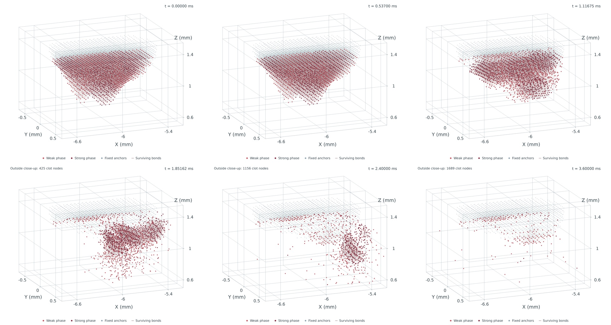
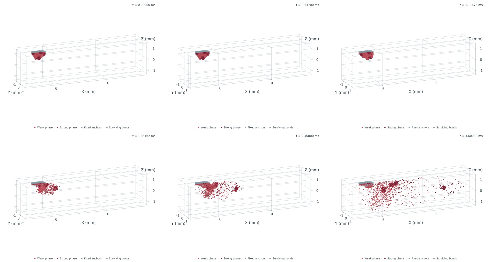

固定相机、Z 轴竖直。读取已接受的 0–3.6 ms 真实计算状态；红色强弱相、蓝灰固定锚点、实际存活键。 视频时间为逐保存态慢放，右上角标注实际物理时间；没有位置插值或位移放大。
固定毫米坐标窗口。移出该窗口的节点数在左上角显示，完整运动见下一视频。
高清特写 MP4（2560×2048）
高清完整视野 MP4（2560×2048）


当前模型有 1927 个材料点、1561 个固定锚点，412 个内部点有初始扰动；边界和锚点仍保留规则排列。 这是计算模型的碎裂，不代表实验验证。当前机械剪切代理未接入真实声流/CFD 输运。